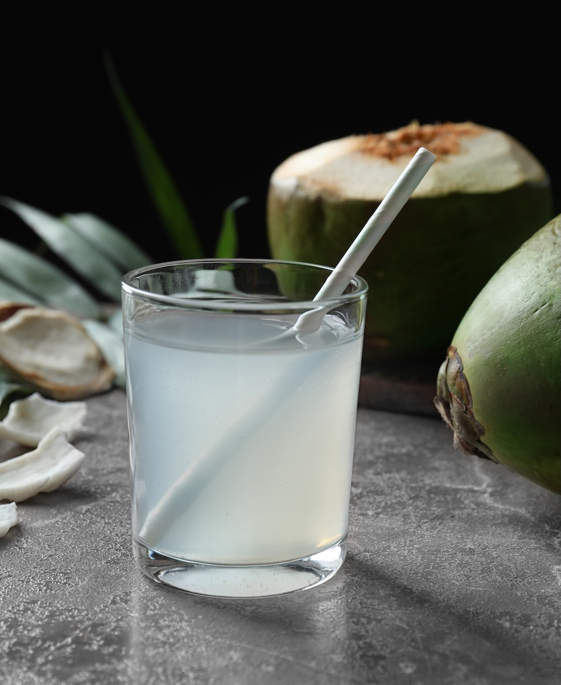
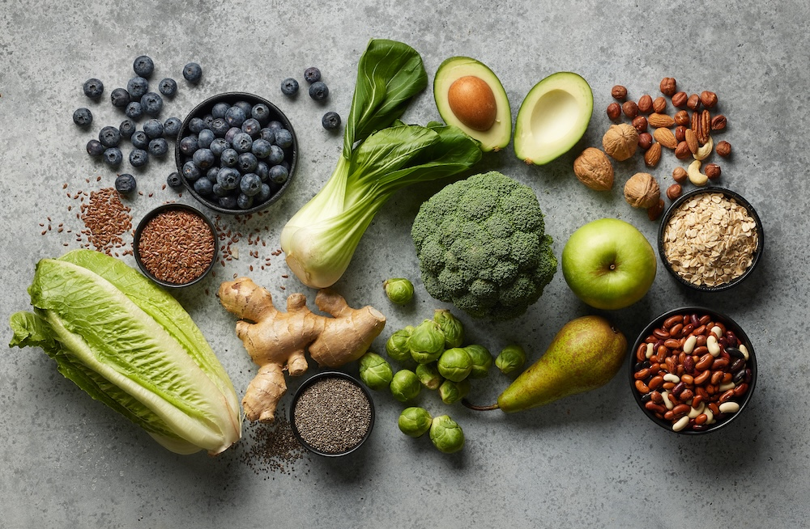

1. GLP-1 Supporting Supplements
One of the biggest conversations in metabolic health right now revolves around GLP-1, a hormone involved in appetite regulation, blood sugar balance, and satiety.
While prescription GLP-1 medications have exploded in popularity, many women are exploring natural ways to support their body's GLP-1 response through diet and supplementation.
Products like Wildtype GLP-1 Support combine ingredients designed to support metabolic signaling, reduce cravings, and help people feel fuller for longer. Instead of relying purely on calorie restriction, the goal is to help the body regulate hunger more effectively.

2. High-Fiber Prebiotic Foods
Fiber is having a major comeback—and not just for digestion.
Prebiotic fibers feed beneficial gut bacteria, which can influence metabolism, appetite hormones, and blood sugar stability.
Women looking to break through weight plateaus are increasingly adding foods like:
- chia seeds
- artichokes
- oats
- green bananas
- resistant starches
Better gut health can mean fewer cravings, improved satiety, and more stable energy levels throughout the day.

3. Protein-Forward Snacks
Protein used to be something people focused on only at meals. In 2026, women are prioritizing protein throughout the entire day.
Higher protein intake can help:
- preserve muscle while losing fat
- increase satiety
- reduce late-night snacking
- stabilize blood sugar
Instead of ultra-processed snacks, women are reaching for things like:
- Greek yogurt
- cottage cheese
- protein smoothies
- hard-boiled eggs
Small adjustments in protein intake can make a big difference in appetite control.

4. Electrolytes for Stress and Cortisol Balance
Chronic stress can slow progress even when nutrition and exercise are dialed in. Elevated cortisol can affect water retention, cravings, and energy levels.
Electrolyte blends with sodium, potassium, and magnesium are becoming popular among women trying to support hydration, energy, and stress resilience—especially for those who exercise frequently or follow lower-carb diets.
Many people report that improving hydration alone can reduce fatigue and overeating.

5. Blood Sugar–Balancing Foods
Blood sugar spikes and crashes can trigger intense hunger and cravings.
Women trying to move past plateaus are focusing on blood sugar stability, often by:
- pairing carbs with protein or fat
- choosing slower-digesting carbs
- adding vinegar or fiber before meals
- avoiding ultra-refined sugars
The goal isn't eliminating carbs—it's keeping glucose levels steady so hunger signals stay balanced.

The Bottom Line
If the scale hasn't moved in months, it doesn't necessarily mean you're doing something wrong.
Weight plateaus often happen when hormones, appetite signaling, stress, and metabolism are working against you.
That's why many women in 2026 are shifting their focus from extreme dieting to supporting how their body regulates hunger, energy, and metabolic health—with tools like fiber, protein, blood sugar balance, and GLP-1 support such as Wildtype GLP-1 Support.
Sometimes, the breakthrough isn't about eating less.
It's about supporting your metabolism smarter.